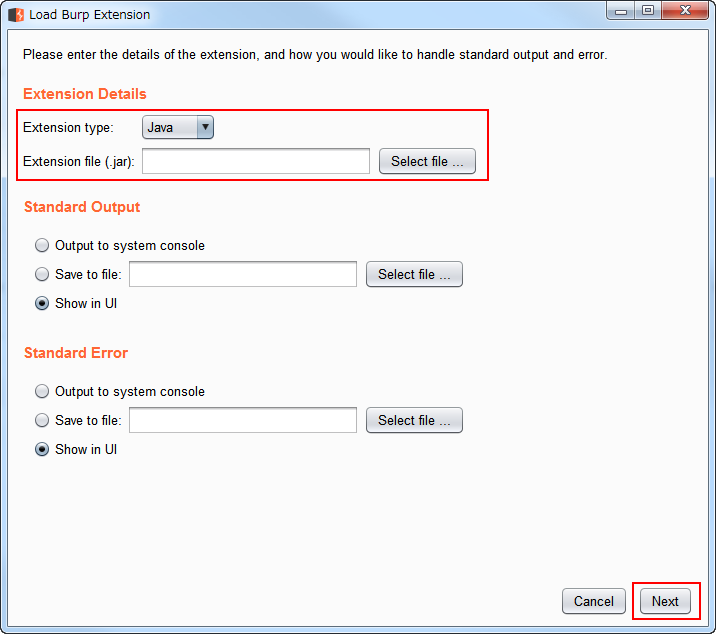

버프 스위트 확장 프로그램 개발 환경설정
Table of Contents
1 개요
- 버프 스위트 확장 프로그램 만드는 과정을 간략하게 설명합니다.
2 환경설정
- 먼저 이클립스에 자바 프로젝트를 하나 만들고
- 가장 상위에 burp 패키지(폴더)를 만듭니다.
- 그리고 버프스위트 인터페이스들을 다운로드 받습니다. (git@github.com:PortSwigger/burp-extender-api.git)
- 다운로드 받은 인터페이스를 burp 패키지안에 복사하면 환경설정 완료입니다.
3 샘플 프로그램 개발
가장 간단한 헬로월드 프로그램을 개발해 보겠습니다.
3.1 코드 작성
- 다음 클래스를 burp 패키지에 추가합니다. (출처: https://github.com/PortSwigger/example-hello-world)
package burp;
import java.io.PrintWriter;
public class BurpExtender implements IBurpExtender{
@Override
public void registerExtenderCallbacks(IBurpExtenderCallbacks callbacks) {
// set our extension name
callbacks.setExtensionName("Hello world extension");
// obtain our output and error streams
PrintWriter stdout = new PrintWriter(callbacks.getStdout(), true);
PrintWriter stderr = new PrintWriter(callbacks.getStderr(), true);
// write a message to our output stream
stdout.println("Hello output");
// write a message to our error stream
stderr.println("Hello errors");
// write a message to the Burp alerts tab
callbacks.issueAlert("Hello alerts");
// throw an exception that will appear in our error stream
throw new RuntimeException("Hello exceptions");
}
}
- 클래스명은 반드시 BurpExtender 로 해야 합니다. 그렇지 않으면 추후 프로그램 로딩시 다음 예외가 발생합니다.
3.2 코드 빌드
- 이클립스 상단의 File > Export 를 클릭합니다.
- 타입을 JAR 로 선택하고 Next를 클릭합니다.
- Export 옵션을 선택하고 JAR 파일 위치를 지정합니다. 마지막으로 Finish를 클릭합니다.
- Export 가 성공하였습니다.
3.3 확장 프로그램 로드
- 버프스위트를 실행시키고 Extender 탭 > Extensions 탭 > Add 버튼을 클릭합니다.
- Load Burp Extension 윈도우가 나타납니다. Extension 타입과 위치를 지정한 후에 Next를 클릭합니다.

- 로드가 성공한 모습입니다. 예제 코드에서 출력하도록 했던 문자열이 출력된 것을 볼 수 있습니다.
- Extension 탭의 하단의 Detail 탭에서 상세 내용을 볼 수 있습니다.